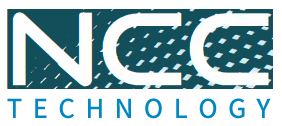
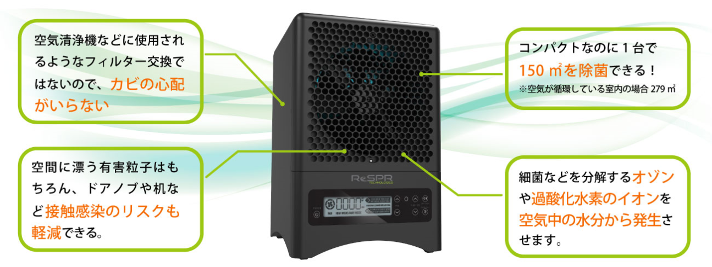

イオンとオゾンを発生させ室内空間を除菌
ウイルスや細菌を95％以上低減、手に触れるものにも有効
感染症対策に最適
感染症対策でこんなお悩みはありませんか？
- 院内・介護施設内の空間を除菌したい
- 広いスペースを除菌するのが大変
- 感染症対策に効果が実証されている製品を選びたい
ReSPRはそういったお悩みを解消します！
空気中のウイルスや細菌が激減 !
手に触れるものも除菌できる !
オフィスや店内、学校、施設などの室内空間に
イオンが広がり有害粒子が分解
ReSPRとは
世界初のNCCテクノロジー異種光触媒を搭載したユニットによって
空気中の有害粒子を除去。
NCCテクノロジーとは？
ハニカム状のセルに特殊金属をコーティングし、広域波長UVランプとの光触媒反応により、空気中の水分から過酸化水素(H2O2)のイオン等を発生させるテクノロジー。NASAの国際宇宙ステーションでも採用され、自然界の空気を浄化するプロセスの研究から生まれた、人のカラダにやさしい技術です。
オゾン濃度について
ReSPR（レスパー）は、イオンだけでなくオゾンも発生させる装置ですので、人のいない時間帯に「アウェイモード」で稼働させることにより、除菌効果が最大限に発揮されます。
ReSPRは空気清浄機と何が違うの？
一般的な空気清浄機はフィルターを通して空気中のウイルスや細菌などを除去しますが、使用しているうちにフィルター自体がカビなどの温床になる危険性もあります。
ReSPR（レスパー）では、空気中や空間にある机やパソコンといった物に付着した細菌・カビを直接除菌します。
お問合せ
ReSPRに関するお問合せ、資料請求はこちら
24時間で一般的な細菌は95%以上除菌
一般的な細菌の24時間除菌効果試験
〈カンザス州立大学医学部〉
エチレンガス分解効果で食品の寿命を延長
食品倉庫内エチレンガスの生成濃度試験
〈SGSデータ〉
権威ある機関から認められる性能
世界的に認められたNCCテクノロジーは
確かな浄化力で、人々をさまざまな空気リスクから守ります。
ReSPRを導入している企業一例
商品仕様
ReSPR FLEX
適用床面積 150㎡
※空気が循環している室内の場合279㎡
W:333 × D:270 × H:215mm
ReSPR ONE
適用床面積 50㎡
※空気が循環している室内の場合140㎡
W:168 × D:168 × H:165mm
軽量な卓上タイプのため、場所を選ばず設置や移動ができます。
大型装置の設置が難しい店舗やオフィスなどに最適です。